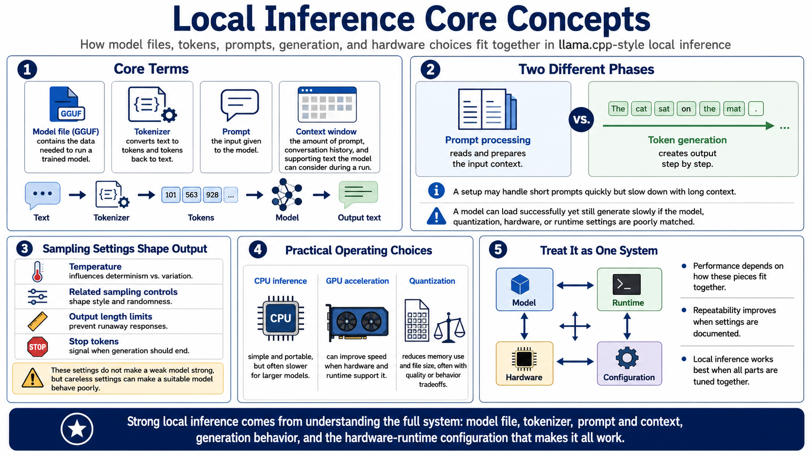

Core Concepts and Terminology
Connecting to LMS... Progress: in progress

Narration
Successful local inference depends on a few core terms. A model file contains the data needed to run a trained model, commonly in GGUF format for llama.cpp workflows. The tokenizer converts text into tokens the model can process and converts generated tokens back into text. A prompt is the input you provide, while the context window is the amount of prompt, conversation history, and supporting text the model can consider during a run.
Prompt processing and token generation are two different phases. Prompt processing is the work of reading and preparing the input context. Token generation is the step-by-step creation of output. A setup may process short prompts quickly but slow down with long context. It may load a model successfully but generate slowly because the chosen model, quantization, hardware, or runtime settings are not well matched.
Sampling settings shape the output. Temperature and related controls affect how deterministic, varied, or creative the result feels. Output length limits prevent runaway responses. Stop tokens help the runtime know when to end a completion. These settings do not make a weak model strong, but they can make a suitable model behave poorly if configured carelessly.
CPU inference, GPU acceleration, and quantization are practical operating choices. CPU inference can be simple and portable but slower for larger models. GPU acceleration can improve speed when supported by hardware and runtime configuration. Quantization reduces memory requirements and file size, often with quality or behavior tradeoffs. Local inference works best when model, runtime, hardware, and configuration are treated as one system.